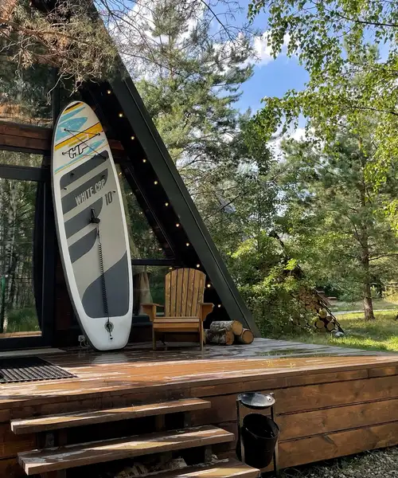
A-frame светлый
Светлый дом с панорамными окнами. Внизу диван, на втором этаже — кровать-матрас под треугольной крышей.
7 000 – 9 500 ₽ / сутки
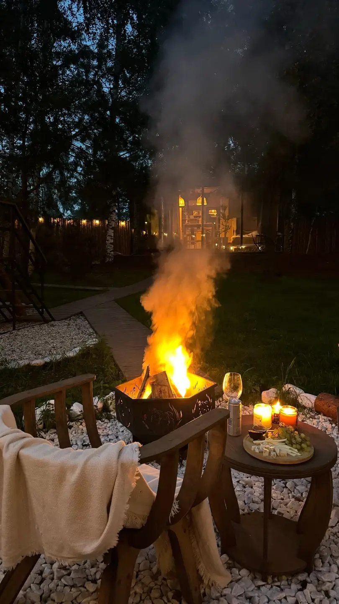
Глэмпинг · 7 км от Иванова
Уютные A-frame и стеклянный BALI у Уводьского водохранилища. Приезжайте замедлиться: тишина, костёр, горячая купель и банный дом «Место силы» с пармастерами.
Где жить
В каждом — кухня (микроволновка, холодильник, чайник, посуда), телевизор, настольные игры, мягкие халаты и средства гигиены. На веранде — своя бочка фурако.

Светлый дом с панорамными окнами. Внизу диван, на втором этаже — кровать-матрас под треугольной крышей.
7 000 – 9 500 ₽ / сутки
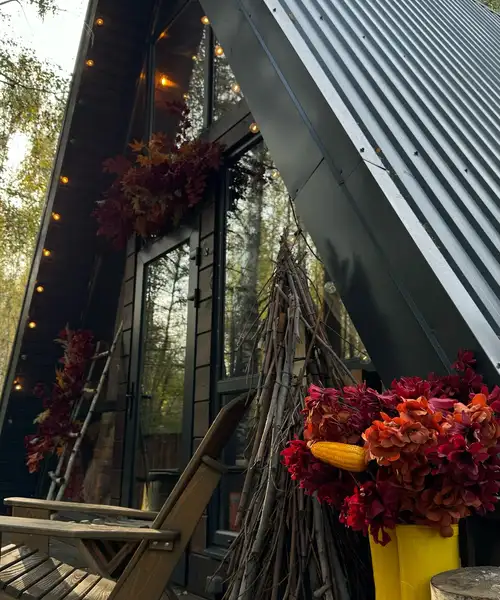
Графитовый A-frame с гирляндой по скату крыши. Веранду каждый сезон украшаем — гости уже считают это нашей фишкой.
от 7 000 ₽ / сутки
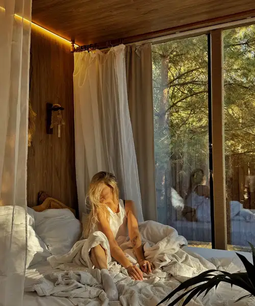
Для двоих. Кровать 160×200 у стеклянной стены — просыпаетесь прямо в соснах. Отдельностоящая ванна.
10 000 – 12 500 ₽ / сутки
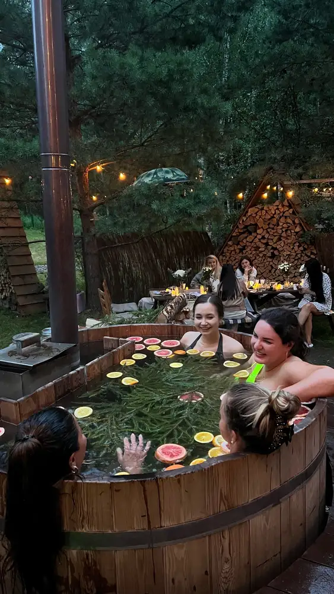
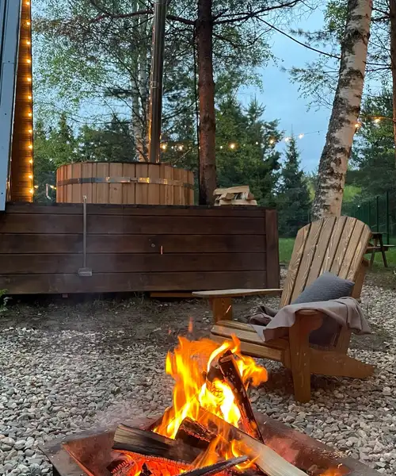
Японская баня
Деревянная бочка из натуральной ангарской лиственницы. Горячая вода, цитрусы и хвоя, пар над водой — и сосны вокруг. Зимой особенно волшебно.
4 000 ₽ / сеанс
Банный дом
Пространство, где сохранены русские банные традиции. Наши пармастера проведут вас через парение — от мягкого тепла до ярких ощущений. Сеансы для двоих, семьи или компании до 8 гостей.
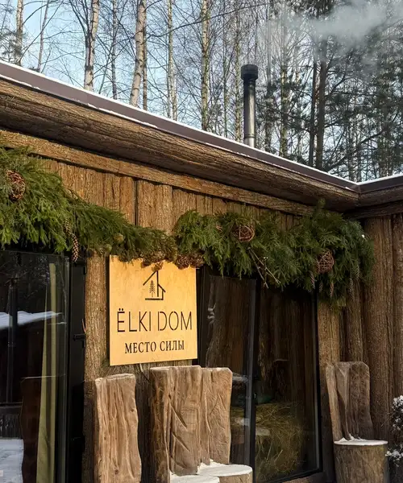
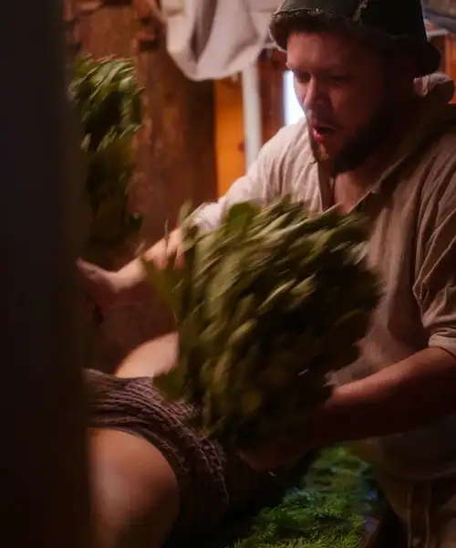
Берёза — для лёгкого очищения, дуб — для глубокого прогрева. Сила пара подбирается под вас.
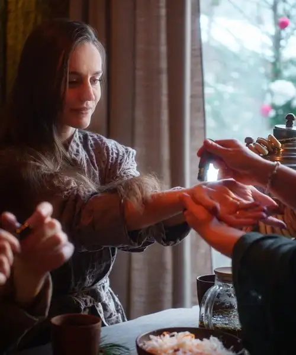
Травяной чай, мёд, баранки и сухофрукты между заходами.
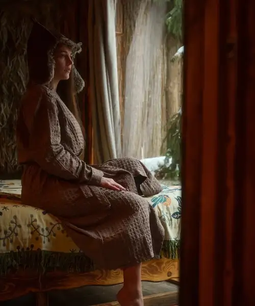
Горячая царская купель с пихтой и холодная — на свежем воздухе. Отдых на качелях из сена в овечьих тулупах под поющую чашу.
Бережное погружение в традиции: мягкий прогрев веером, ароматы трав, лёгкое парение. Для тех, кто в бане впервые.
Ароматный прогрев (пихта, дуб, лаванда), индивидуальное парение у каждого гостя, контраст с купелью, чайная церемония.
2 гостя — 27 000 ₽ + 7 000 ₽ за доп. гостя
Вечер только для девушек: общий прогрев, ароматерапия, солевой пилинг, купель с пихтой, медитация в сенной комнате.
6 200 ₽ / гостья
Заходы с пихтой и полевыми травами, учимся париться вместе, кокосовые ванночки для ног с цветами, солевой скраб.
Сеансы банного дома — от 6 000 ₽. Даты групповых программ публикуем в Telegram-канале бани. Цены по афишам — точную стоимость уточняйте при бронировании.
Чем заняться
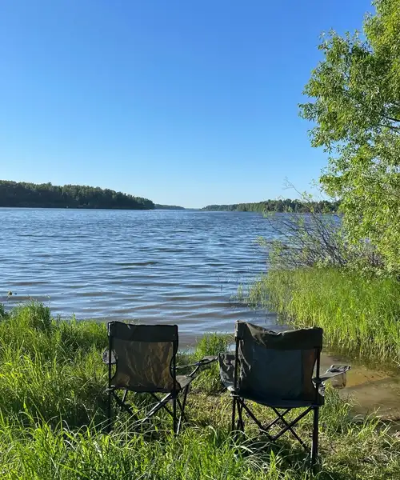
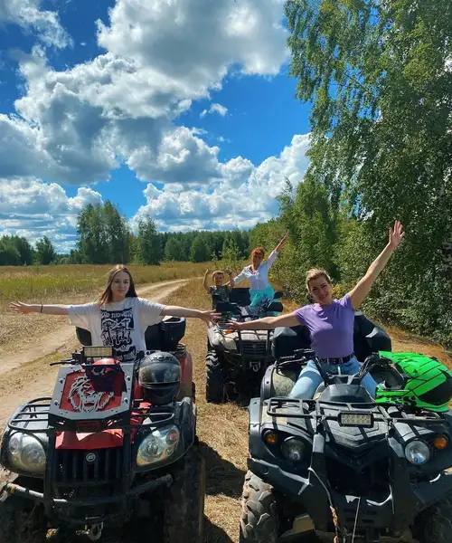
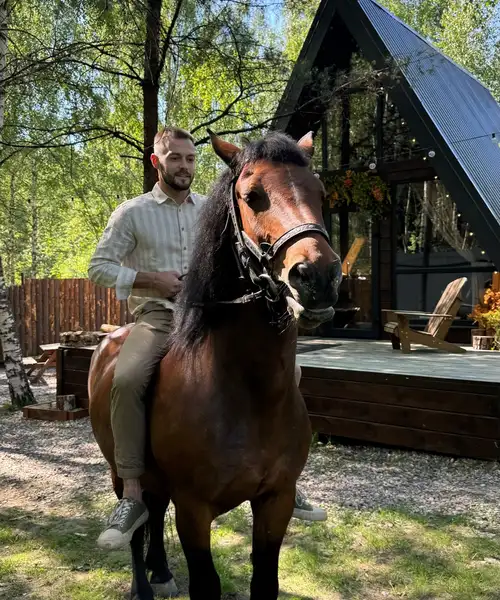
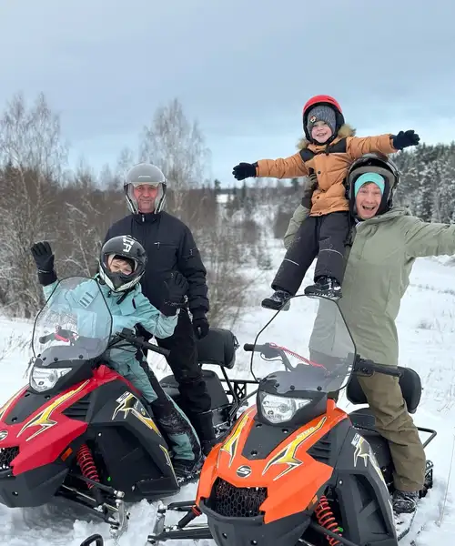
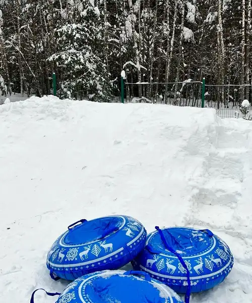
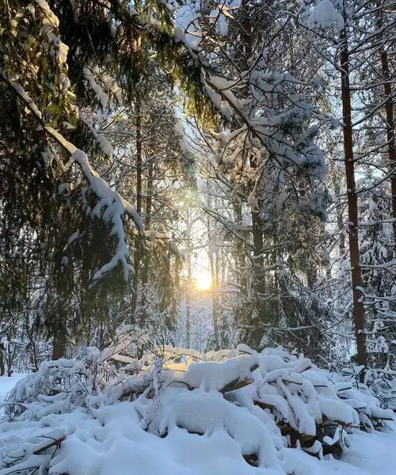
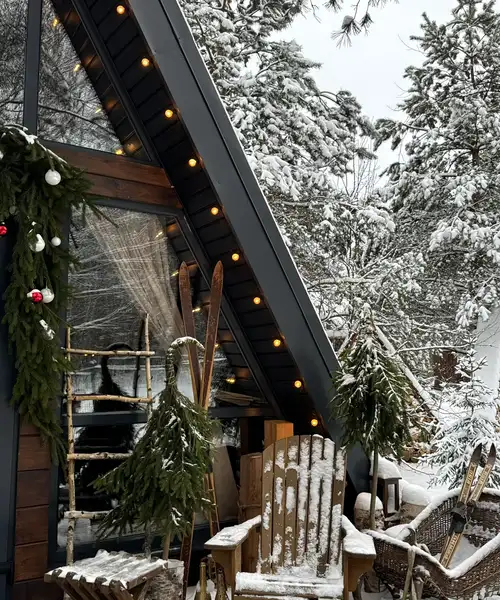
Праздники
Дни рождения, девичники, встречи друзей, командные игры на поляне. Накроем стол на веранде, зажжём гирлянды и костёр.
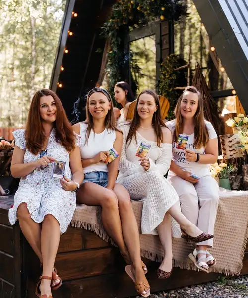
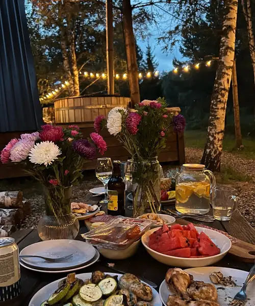
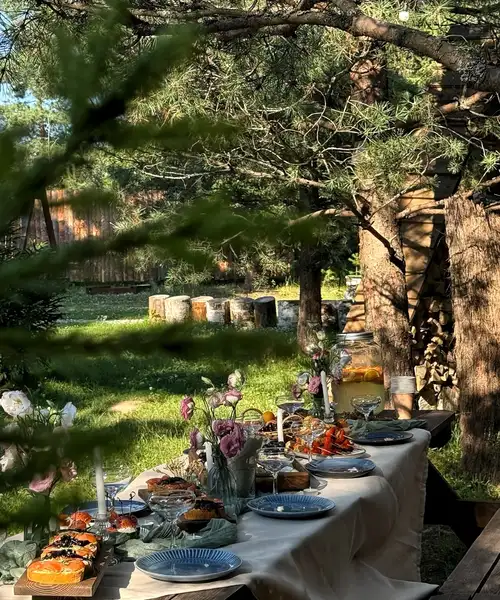
Прозрачно
| A-frame светлый | 7 000 – 9 500 ₽ / сутки |
| A-frame тёмный | от 7 000 ₽ / сутки |
| BALI — стеклянный домик на двоих | 10 000 – 12 500 ₽ / сутки |
| Фурако | 4 000 ₽ |
| Банный дом «Место силы» | от 6 000 ₽ |
| Квадроциклы | 4 500 – 8 000 ₽ |
| SUP-доска | 1 500 ₽ |
| Отметить праздник | 15 000 – 35 000 ₽ |
Кухня с микроволновкой, холодильником, чайником и посудой, телевизор, настольные игры, свежие мягкие халаты и индивидуальные средства гигиены. На веранде каждого домика — фурако.
В сосновом лесу у Уводьского водохранилища, в 7 км от Иванова (с. Егорий) и в 240 км от Москвы.
Да, банный дом «Место силы» на территории. Гостям домиков действуют скидки на банные сеансы — уточняйте актуальную акцию.
Фурако и чан, баня с пармастерами, катание на лошадях, снегоходы, лыжи по сосновому лесу, рыбалка и коньки, ватрушки для детей.
Да, электронные и бумажные.
Оставьте заявку на этой странице или напишите: домики — WhatsApp +7 962 162-75-55, баня — +7 980 686-13-13 (звонок или Telegram).
Бронирование
Оставьте заявку — мы проверим свободные даты и свяжемся с вами. Без переписки в личных сообщениях и ожидания ответа.
Демо-форма: в рабочей версии заявка сразу придёт администратору в Telegram, а гость получит подтверждение.
Домики: +7 962 162-75-55 · WhatsApp
Баня «Место силы»: +7 980 686-13-13 · Telegram
ВКонтакте: vk.ru/elkidom37
Где: с. Егорий, Ивановский район — 7 км от Иванова, у Уводьского водохранилища